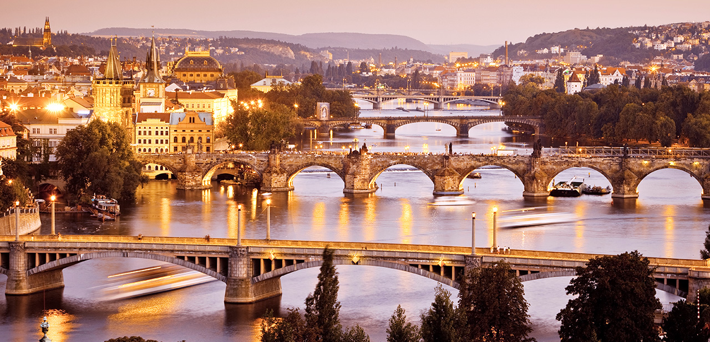

Locate Your Destination
CONTINENT
Asia
Republic of Maldives
Maldives
China
Hong Kong
Taiwan
Europe
France
Paris
Italy
Venice
Finland
Helsinki
Greece
Greece
Spain
Barcelona
UK
London
Hungary
Prague
Australia
Sydney
North America
Cuba
Cuba
Canada
Vancouver
Maui
Maui
|
Prague
Country: Czech Republic
Rank:12
Tag:Nature, Old Town, Experience, Historical

Prague is the equal of Paris in terms of beauty. Its history goes back a
millennium. And the beer? The best in Europe.
People who have been to Maldives:
-
By Neil Wilson
How can you not love a city that has a pub with vinyl cushions on the wall above
the gents' urinal, so you can rest your head while you 'go'? Where you can order
a beer without speaking, simply by placing a beer mat on the table? And where
that beer is probably the best in the world? But it's not just exquisite ale and
a wonderfully relaxed drinking culture that keep bringing me back to Prague –
there's wit and weirdness in equal measure: a public fountain where two figures
pee in a puddle, spelling out literary quotations; a 1950s nuclear bunker hidden
beneath a city-centre hotel; and a cubist lamppost. Quirky doesn't even begin to
describe it.
reviewID:r12
Highlights:
-
Art All Around
Prague's art galleries may not have the allure of the Louvre, but Bohemian art
offers much to admire, from the glowing Gothic altarpieces in the Convent of St
Agnes, to the luscious art nouveau of Alfons Mucha, and the magnificent
collection of 20th-century surrealists, cubists and constructivists in the
Veletržní Palác. The weird and witty sculpture of David Černý punctuates
Prague's public spaces, and the city itself offers a smorgasbord of stunning
architecture, from the soaring verticals of Gothic and the exuberance of baroque
to the sensual elegance of art nouveau and the chiselled cheekbones of cubist
facades.
-
Where Beer is God
The best beer in the world just got better. Since the invention of Pilsner
Urquell in 1842, the Czechs have been famous for producing some of the world's
finest brews. But the internationally famous brand names – Urquell, Staropramen
and Budvar – have been equalled, and even surpassed, by a bunch of regional
Czech beers and microbreweries that are catering to a renewed interest in
traditional brewing. Never before have Prague's pubs offered such a wide range
of ales – names you'll now have to get your head around include Kout na Šumavě,
Svijanský Rytíř and Velkopopovický Kozel.
-
Urban Explorations
Prague's maze of cobbled lanes and hidden courtyards is a paradise for the
aimless wanderer, always beckoning you to explore a little further. Just a few
blocks away from the Old Town Square you can stumble across ancient chapels,
unexpected gardens, cute cafes and old-fashioned bars with hardly a tourist in
sight. One of the great joys of the city is its potential for exploration –
neighbourhoods such as Vinohrady and Bubeneč can reward the urban adventurer
with countless memorable cameos, from the setting sun glinting off church domes,
to the strains of Dvořák wafting from an open window.
Things To Do:
- Prague Castle
telephone:+420 224372423address:Hradcanske namestigettingThereTram:22 Metro:MalostranskamoreInfo:www.hrad.czopenHours:grounds 5am-midnight Apr-Oct, 6am-11pm Nov-Mar, gardens 10am-6pm Apr
& Oct, to 7pm May & Sep, to 9pm Jun-Aug, closed Nov-Mar, historic
buildings 9am-5pm Apr-Oct, to 4pm Nov-Mar
- Charles Bridge
address:Prague, Czech RepublicgettingThereTram: 17, 18 to Karlovy lázně, 12, 20, 22 to Malostranské
náměstíopenHours:24r
- Prague Jewishh Museum
telephone:+420 222 317 191address:Reservation Centre, U starého hřbitova 3a gettingThereMetro: StaroměstskámoreInfo:www.jewishmuseum.czopenHours:9am-6pm Sun-Fri Apr-Oct, to 4.30pm Nov-Mar
People who like this place also like to go to:
Budapest
Greece
source:
Lonely Planet:
www.lonelyplanet.com/prague
|